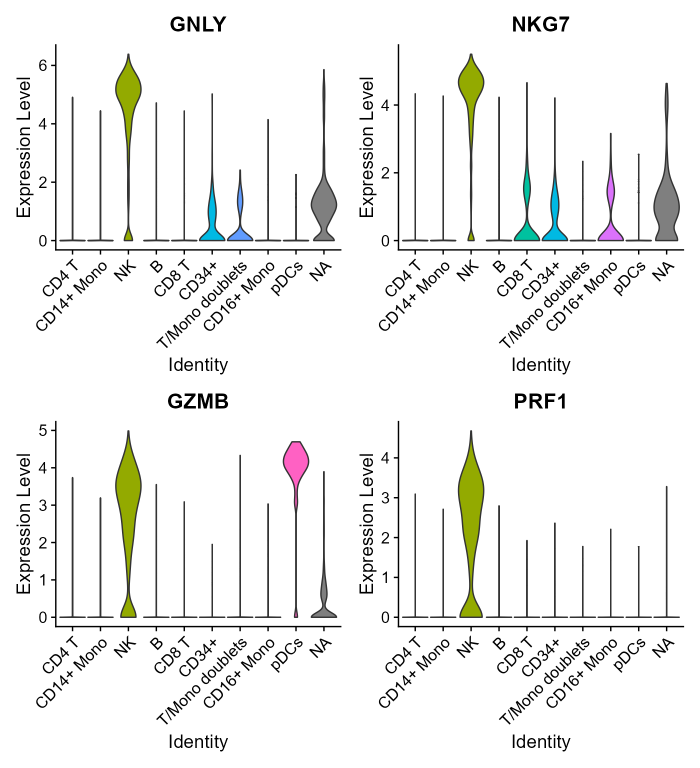
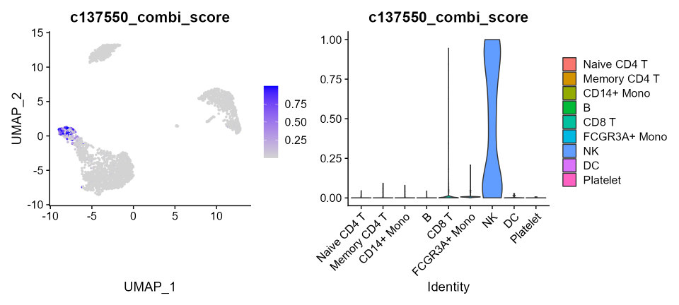
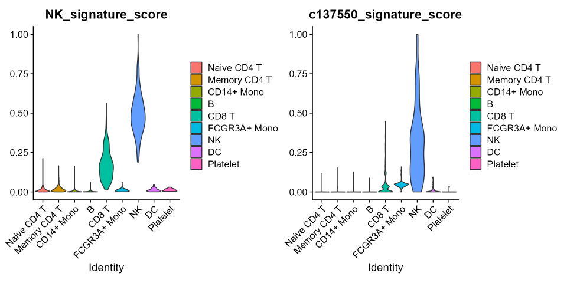

Signature refining tutorial - scRNA-seq Workflow
Combiroc-driven optimization of NK cells marker
signature at single cell resolution.
Riccardo L. Rossi, Ivan Ferrari
30 June 2023
Source:vignettes/combiroc_vignette_2.Rmd
combiroc_vignette_2.RmdIntroduction
Single-cell transcriptomics is a rapidly growing field which is essential to improve our understanding of complex tissues and organisms at an unprecedented resolution. The manual annotation of cell identity, which is the gold standard procedure to determine cell populations, remains a major limitation in most scRNA-seq analysis [1]; more recently, a growing number of resources are being published offering the scientific community many cell type specific gene signature as a reference. Alas, marker gene belonging to gene signatures could be unspecific if taken singularly, specially if that given gene is involved in all the differentiation steps in some cellular population of the dataset (from stem cells to a terminally differentiated population), making it a differentially expressed gene (DEG) in more than one cluster. In this context we decided to enlarge combiroc’s breath to the scRNA-seq analysis field as a signature refiner, in order to find the best few marker genes combinations from an already existing gene signature, regardless the genes’ ranking as differentially expressed. Combiroc is specialized in finding specific combinations, thus its use may allow researchers to find some cells of interest with a high degree of confidence and help in the process of manual annotation by reducing the number of marker genes to consider.
Here we show the complete workflow of combiroc-mediated signature refinement at single-cell resolution in which we used 3 PBMC public datasets showed in Seurat vignettes. All of them have been deeply characterized and scrupulously labelled, so they are accepted and used as reference by the scientific community.
Libraries needed
and also needed for this specific scRNAseq workflow (install them first, if you didn’t already):
library(devtools) # used to install devel-level packages
library(Seurat) # used to process scRNAseq data
library(SeuratData) # used to install and load scRNAseq datasets
library(SeuratDisk) # used to read h5seurat filesA note on executing this vignette
The code described in this vignette was originally run on a
jupyter-based R-kernel notebook backed by a high-performance computing
(HPC) server infrastructure. Due to relevant size of some of the objects
loaded and/or created, it is unlikely that the whole code can be
run on a standard computing equipment (i.e. a laptop). The
computationally heavy passages are therefore marked as [Heavy-Code] and can be skipped by the
user by reading/loading pre-computed objects or intermediate
results either from rds or csv files.
In this way the reader/reviewer will be able to complete the whole
workflow without having a HPC server.
Selection of NK cells marker combinations
The purpose of this analysis is to find the best combinations of
known gene markers that best describe the NK-cell populations starting
from a NK-cell single-cell transcriptomic signature, then using the
models calculated on such combinations on other scRNAseq datasets.
The difficulty to distinguish NK (Natural Killer) cells from CD8+ T
cells in many scRNAseq datasets is a good challenge to test combiroc
performance in markers signature optimization. After performing
differential marker expression on an initial “training” scRNAseq dataset
we will take into account the top 30 differentially expressed genes
(DEGs) specific for NK cells cluster; then we will use combiroc to
select the best gene combinations among these top 30 NK cells markers.
Regression models from the selected combinations will then be used on
other independent datasets (“test” datasets) of the same kind.
As combiroc training dataset we are using the PBMC CITE-seq atlas from Hao et al. 2021 [2]. This dataset can be downloaded as an h5 Seurat data (h5s) from the FredHutch-NYCG atlas page (exact download link: here) [Heavy-Code]
# read the downloaded h5seurat dataset file (using SeuratDisk functions)
atlas <- LoadH5Seurat("pbmc_multimodal.h5seurat")
# activate the level-1 annotations
Idents(atlas) <- atlas@meta.data$celltype.l1
# overview annotated cell clusters with UMAP
DimPlot(atlas, label = T, repel = T)To guarantee the best possible performance of the training dataset
(the one we extract the markers combinations from) is important to make
sure its value ranges are similar to those we wanto to use as
test/validation datasets. For this reason we advise using the raw counts
matrices for all the datasets, in order to be able to consistently
rescale them in the same way by using the function
Seurat::ScaleData().
Extracting the NK markers
The gene markers for NK cells were obtained with a standard Seurat
analysis (see here);
the Seurat::FindMarkers() function was used, then markers
were ordered by fold change: [Heavy-Code]
# Performing differential expression analysis
nk.de.markers <- FindMarkers(atlas, ident.1 = "NK", ident.2 = NULL)
nk.de.markers <- nk.de.markers[order(-nk.de.markers$avg_log2FC), ]
nk_genes <- rownames(nk.de.markers)[1:30]By visualising the expression values of the top 4 markers of NK cells cluster it is evident that the majority of them is also higly expressed in other non-NK clusters (e.g. CD8 T), making them too unspecific to allow a well defined cluster annotation if considered individually.
FeaturePlot(atlas, nk_genes[1:4])The user not willing (or computationally limited) to run the differential expression analysis above can read the pre-computed object containing the gene signature of the top 30 DEGs (overexpressed in NK cells vs all others):
nk.de.markers <- read.csv('inst/precomp/nk_degs')
nk_genes <- rownames(nk.de.markers)[1:30]
nk_genes
#> [1] "GNLY" "NKG7" "GZMB" "PRF1" "FGFBP2" "GZMA" "KLRD1"
#> [8] "CST7" "SPON2" "KLRF1" "CTSW" "CD247" "CCL5" "CLIC3"
#> [15] "HOPX" "GZMH" "IL2RB" "KLRB1" "TRDC" "CD7" "GZMM"
#> [22] "MYOM2" "FCGR3A" "ARL4C" "ABHD17A" "SYNE2" "CMC1" "EFHD2"
#> [29] "ADGRG1" "JAK1"Converting Seurat objects in combiroc’s input format
Central to the combiroc workflow applied to single cell data is the
function seurat_to_combiroc(). It takes a Seurat object as
input and extracts both the selected marker expression values from the
@data slot of a given assay and,
optionally, the class of any specific celltype (in our case ‘NK’ or
‘Other’); then it directly assembles a dataframe compatible with
combiroc workflow either for training (finding combinations and models)
or testing purposes (using previously found combinations).
Preparing the training single-cell RNAseq dataset
Once we have a Seurat object obtained from a standard Seurat
protocol, it needs to be converted in a combiroc-ready version in order
to perform the training procedure, i.e. finding the best markers
combinations and models, with combiroc’s functions. Such a
train object can be obtained with the
seurat_to_combiroc() function: [Heavy-Code]
train <- seurat_to_combiroc(SeuratObject = atlas,
gene_list = nk_genes,
assay = 'SCT',
labelled_data = T,
case_class = 'NK',
case_label = 'NK',
control_label = 'Other')The pre-computed train object obtained with the code
above can be directly read here:
train <- readRDS(file = "inst/precomp/train.rds")
head(train)
#> ID Class ABHD17A ADGRG1 ARL4C CCL5 CD247
#> 1 L1_AAACCCAAGAAACTCA Other 0.6931472 0.0000000 0.000000 0.0000000 0.0000000
#> 2 L1_AAACCCAAGACATACA Other 0.0000000 0.0000000 1.609438 0.0000000 0.6931472
#> 3 L1_AAACCCACAACTGGTT Other 0.0000000 0.0000000 0.000000 0.0000000 0.0000000
#> 4 L1_AAACCCACACGTACTA NK 1.3862944 0.6931472 1.609438 2.4849066 1.7917595
#> 5 L1_AAACCCACAGCATACT Other 0.0000000 0.0000000 1.386294 0.6931472 0.6931472
#> 6 L1_AAACCCACATCAGTCA Other 0.0000000 0.0000000 2.302585 2.9957323 1.6094379
#> CD7 CLIC3 CMC1 CST7 CTSW EFHD2 FCGR3A FGFBP2
#> 1 0.0000000 0.000000 0.000000 0.000000 0.000000 1.0986123 0.000000 0.000000
#> 2 1.6094379 0.000000 0.000000 0.000000 0.000000 0.6931472 0.000000 0.000000
#> 3 0.6931472 0.000000 0.000000 0.000000 0.000000 0.0000000 0.000000 0.000000
#> 4 1.6094379 2.197225 1.945910 2.944439 1.945910 1.3862944 1.386294 2.079442
#> 5 0.6931472 0.000000 0.000000 0.000000 1.098612 0.6931472 0.000000 0.000000
#> 6 0.0000000 0.000000 2.302585 2.079442 0.000000 0.0000000 0.000000 0.000000
#> GNLY GZMA GZMB GZMH GZMM HOPX IL2RB JAK1
#> 1 0.000000 0.000000 0.000000 0.00000 0.0000000 0.000000 0.000000 0.6931472
#> 2 0.000000 0.000000 0.000000 0.00000 0.0000000 0.000000 0.000000 1.3862944
#> 3 0.000000 0.000000 0.000000 0.00000 0.6931472 0.000000 0.000000 0.0000000
#> 4 3.044522 1.386294 2.772589 1.94591 1.3862944 1.609438 1.791759 1.9459101
#> 5 0.000000 0.000000 0.000000 0.00000 1.0986123 0.000000 0.000000 0.6931472
#> 6 0.000000 1.098612 0.000000 0.00000 1.9459101 0.000000 0.000000 1.3862944
#> KLRB1 KLRD1 KLRF1 MYOM2 NKG7 PRF1 SPON2 SYNE2
#> 1 0.000000 0.000000 0.000000 0.000000 0.0000000 0.000000 0.000000 0.0000000
#> 2 2.079442 0.000000 0.000000 0.000000 0.0000000 0.000000 0.000000 0.0000000
#> 3 0.000000 0.000000 0.000000 0.000000 0.6931472 0.000000 0.000000 0.6931472
#> 4 1.386294 1.609438 1.386294 1.791759 3.9120230 1.791759 2.397895 1.0986123
#> 5 0.000000 0.000000 0.000000 0.000000 0.0000000 0.000000 0.000000 0.0000000
#> 6 0.000000 0.000000 0.000000 0.000000 2.9957323 0.000000 0.000000 1.7917595
#> TRDC
#> 1 0.000000
#> 2 0.000000
#> 3 0.000000
#> 4 1.791759
#> 5 0.000000
#> 6 0.000000Then, as described in the main
combiroc vignette, we used combiroc_long to make the
data in long tidy format, fit for further processing:
train_long <- combiroc_long(train)
head(train_long)
#> # A tibble: 6 × 4
#> ID Class Markers Values
#> <chr> <chr> <chr> <dbl>
#> 1 L1_AAACCCAAGAAACTCA Other ABHD17A 0.693
#> 2 L1_AAACCCAAGAAACTCA Other ADGRG1 0
#> 3 L1_AAACCCAAGAAACTCA Other ARL4C 0
#> 4 L1_AAACCCAAGAAACTCA Other CCL5 0
#> 5 L1_AAACCCAAGAAACTCA Other CD247 0
#> 6 L1_AAACCCAAGAAACTCA Other CD7 0Finding the best marker combinations and models
Given a list of markers, combiroc assesses the performance of all
combinations of such markers. The computational load of this process can
be high for more than 10 markers. A list of \(n\) markers generates \({2^{n} - 1 }\), thus for \(n=30\) we have more than a
billion possible combinations.
Mathematically, for combinations here we mean combinations without
repetition, i.e. a subset of \(k\)
distinct elements of a set with \(n\)
elements, that can be calculated as the binomial
coefficient \(\binom{n}{k}\).
The purpose of combiroc is always finding the best optimized combination of markers, i.e. a subset of the original full signature which, despite the much smaller number of markers, retains the discriminatory power of the original signature or it’s even better. This is particularly important in the field of diagnostics where a smaller set of marker has a bigger translational potential (see our first combiroc paper Mazzara et al. 2017 for a discussion on this).
Similarly, here we will limit the search to combinations composed by
no more than 5 markers: to do so we will set the
max_length = 5 attribute of the combi()
function. With this limitation the number of combinations to compute
drops to 174,436, which is computationally more manageable.
\[ Combinations(upTo5Markers) = \sum_{i=1}^5 \binom{n}{i} \]
#> n_markers n_combs tot_combs
#> 1 1 30 30
#> 2 2 435 465
#> 3 3 4060 4525
#> 4 4 27405 31930
#> 5 5 142506 174436
The combi() function works on the train
dataset computing the marker combinations and counting their
corresponding positive samples in each class (once thresholds are
selected).
A sample, to be considered positive for a given combination, must have a
value higher than a given signal threshold (signalthr)
for at least a given number of markers composing that combination
(combithr).
As described in the combiroc’s
vignette for the standard workflow, the argument
signalthr in the combi() function should
be set according to the guidelines and characteristics of the
methodology used for the analysis or by an accurate inspection of the
signal intensity distribution. In the event specific guidelines are
missing, one should set the value signalthr as suggested by the
distr$Density_plot feature.
Single cell RNA-seq datasets are exactly one of such cases: it is
often neither possible nor easy to extrapolate the best signal
threshold, due to the highly scattered distribution of the expression
values: here we thus take advantage of the package-specific
distr$Density_plot feature and will let the package find
this value without the user intervention.
Combinatorial analysis
The core of a combiroc analysis are the two
marker_distribution() and combi() functions:
changing the value of key parameters in these functions we can modulate
the stringency and severity of the analysis.
To obtain a performing and stringent signature refinement we set
combithr argument to 2 in
combi(): this is the minimum number of positively expressed
genes (i.e. the minimum number of genes that need to reach the signal
threshold) to consider the whole combination as a valid one.
The plots below show expression values (signal) distribution obtained
with the markers_distributions() functions on the training
dataset in long format (train_long). Differently from two
well-defined classes (as seen in the standard combiroc workflow), it’s
not intuitive where to put the signal threshold, but the function
suggests a signal intensity value of 0.9. Genes
expression values, as expected, are distributed in different ways in the
two classes:
Please note: the markers_distribution() command
naturally triggers a few warnings in which the user is reminded how to
use the command arguments
distr <- markers_distribution(train_long,
signalthr_prediction = TRUE,
case_class = "NK")
distr$Density_plotThe suggested threshold is indicated by the vertical dashed line and
its value is shown in overlay. The exact value can be retrieved from the
distr object by distr$Coord$threshold (see the
Standard
workflow for further details):
autoThreshold <- distr$Coord[distr$Coord$Youden==max(distr$Coord$Youden), 'threshold'][1]
distr$Coord[distr$Coord$Youden==max(distr$Coord$Youden),] # optimal threshold
#> threshold specificity sensitivity Youden
#> 3 0.8958797 86 79 0.6461265Let’s apply now the combi() function on the training
dataset train with the suggested threshold. The results is
a table (the train_tab dataframe) of all the combinations
with 1 (= the individual markers) to 5 genes in them.
In this dataframe are also shown sensitivity (SE) and specificity (SP) for each combination:
- SE as the percentage of positive cells for a ‘NK’ class
- SP as the percentage of negative cells for ‘Other’ class
[Heavy-Code] (use the pre-computed below)
train_tab <- combi(train, signalthr = autoThreshold, combithr = 2, max_length = 5, case_class = 'NK')Read the precomputed object:
train_tab <- read.table('inst/precomp/train_tab')
tail(train_tab)
#> Markers X.Positives.Other X.Positives.NK
#> Combination 174401 MYOM2-NKG7-PRF1-SPON2-SYNE2 20313 18220
#> Combination 174402 MYOM2-NKG7-PRF1-SPON2-TRDC 12876 18413
#> Combination 174403 MYOM2-NKG7-PRF1-SYNE2-TRDC 20844 18482
#> Combination 174404 MYOM2-NKG7-SPON2-SYNE2-TRDC 19664 18206
#> Combination 174405 MYOM2-PRF1-SPON2-SYNE2-TRDC 12019 17767
#> Combination 174406 NKG7-PRF1-SPON2-SYNE2-TRDC 20866 18512
#> SE SP n_markers
#> Combination 174401 97.62109 85.80503 5
#> Combination 174402 98.65517 91.00210 5
#> Combination 174403 99.02486 85.43396 5
#> Combination 174404 97.54608 86.25856 5
#> Combination 174405 95.19396 91.60098 5
#> Combination 174406 99.18560 85.41859 5Then we rank the combinations by Youden index (SE+SP-1) and we filter them by their SE and SP values. We will select the top 4 (for demonstration purposes only, others may be also good): what we are using to rank is the Youden index and the number of genes in the combination, where combinations with fewer genes are considered better ones.
rmks <- ranked_combs(combo_table = train_tab,
min_SE = 95,
min_SP = 95)
head(rmks$table)
#> Markers X.Positives.Other
#> Combination 169807 GNLY-IL2RB-KLRF1-SPON2-TRDC 6914
#> Combination 172173 GZMB-IL2RB-KLRF1-SPON2-TRDC 5633
#> Combination 163878 FCGR3A-GNLY-IL2RB-KLRF1-MYOM2 6401
#> Combination 137550 CLIC3-FCGR3A-IL2RB-KLRD1-KLRF1 6777
#> Combination 138800 CLIC3-GNLY-IL2RB-KLRF1-SPON2 6361
#> Combination 164702 FCGR3A-GZMB-IL2RB-KLRF1-TRDC 6351
#> X.Positives.NK SE SP n_markers Youden
#> Combination 169807 18356 98.34976 95.16841 5 0.9351818
#> Combination 172173 18186 97.43892 96.06359 5 0.9350251
#> Combination 163878 18276 97.92113 95.52690 5 0.9344804
#> Combination 137550 18325 98.18367 95.26415 5 0.9344782
#> Combination 138800 18268 97.87827 95.55486 5 0.9343313
#> Combination 164702 18264 97.85684 95.56184 5 0.9341868And with roc_reports() we carry out the computations for
the top four combinations (we need to explicitly indicate their number
IDs in the selected_combinations argument). Also, we need
to indicate the case class (NK):
reports <-roc_reports(train,
markers_table = train_tab,
selected_combinations = c(169807,172173,163878, 137550),
case_class = 'NK',
single_markers= nk_genes[1:4])Let’s explore the results generated:
reports$PlotZooming in to show the higher performance of the combinations:
rocplot <- (reports$Plot) + coord_cartesian(xlim = c(0, 0.2))
rocplot
reports$Metrics
#> AUC SE SP CutOff ACC TN TP FN FP NPV
#> GNLY 0.962 0.959 0.914 0.146 0.920 130861 17908 756 12239 0.994
#> NKG7 0.970 0.982 0.901 0.131 0.911 128972 18336 328 14128 0.997
#> GZMB 0.949 0.928 0.925 0.136 0.925 132375 17316 1348 10725 0.990
#> PRF1 0.965 0.935 0.919 0.137 0.921 131569 17452 1212 11531 0.991
#> Combination 169807 0.995 0.982 0.968 0.107 0.970 138553 18326 338 4547 0.998
#> Combination 172173 0.995 0.977 0.970 0.108 0.971 138769 18229 435 4331 0.997
#> Combination 163878 0.995 0.985 0.962 0.078 0.965 137680 18393 271 5420 0.998
#> Combination 137550 0.995 0.976 0.966 0.101 0.967 138179 18224 440 4921 0.997
#> PPV
#> GNLY 0.594
#> NKG7 0.565
#> GZMB 0.618
#> PRF1 0.602
#> Combination 169807 0.801
#> Combination 172173 0.808
#> Combination 163878 0.772
#> Combination 137550 0.787The overall internal classification performances of the top 4 combinations are better than the top 4 single markers ones, and are very similar with each other.
To know which are the genes in any specific combination we can use
the show_markers() function. For combinations 169807 and
172173, use:
show_markers(selected_combinations =c(169807,172713), markers_table = train_tab)
#> Combination Composing_markers
#> 1 Combination 169807 GNLY-IL2RB-KLRF1-SPON2-TRDC
#> 2 Combination 172713 GZMH-HOPX-KLRB1-KLRF1-MYOM2Testing the combinations on independent datasets (validation)
TEST/VALIDATION DATASETS
As independent test/validation we used 2 different datasets on which we will evaluate the expression levels of the previously selected NK related marker combinations in each cluster of the datasets:
- Cord Blood mononuclear cells (CBMC) CITE-seq dataset shown in ‘Using Seurat with multimodal data’ vignette [3]
- Peripheral blood mononuclear cells (PBMC) PBMC3K scRNA-seq dataset from Satija, R., Farrell, J., Gennert, D. et al. 2015 [4]
Please note: the main reason we choose the above datasets is because they are well annotated. While the cell clusters annotation of the first (training) dataset was used in the computations by combiroc to distinguish NK cells from all other cells, the cells annotations of the other two validation datasets are taken away from the data, and they will be only used ex-post as a ground truth to check the expression of marker combinations.
Testing marker combinations on CBMC dataset
The CBMC test dataset, made of 8617 cord blood
mononuclear cells (CBMCs), produced with CITE-seq was directly loaded
from the SeuratData package. The dataset has been generated
by Stoeckius et al. 2017 [3]. Further
description can be found in the Seurat
multimodal vignette or by calling the guide with
?cbmc.
We are going to invoke the cbmc dataset from the
SeuratData package and preprocess it as needed:
# retrieve cbmc data from SeuratData package
if (!require("SeuratData", quietly = TRUE))
devtools::install_github('satijalab/seurat-data')
library(SeuratData)
InstallData("cbmc.SeuratData")
data(cbmc)
# process data with standard Seurat protocol
library(Seurat)
cbmc <- NormalizeData(cbmc, verbose = F) %>%
FindVariableFeatures(verbose = F) %>%
ScaleData(verbose = F) %>%
RunPCA(verbose = F)
cbmc <- FindNeighbors(cbmc, dims = 1:30, verbose = F)
cbmc <- FindClusters(cbmc, resolution = 0.8, verbose = FALSE)
cbmc <- RunUMAP(cbmc, dims = 1:30, verbose = F)
# add cell annotations from CITE seq to identities
Idents(cbmc) <- cbmc@meta.data$protein_annotations
cbmc[['ID']]<- Idents(cbmc)
cbmc
# visualize UMAP clusters
DimPlot(cbmc, repel = T, label = T)
Please note that the “NA” gray cells cluster is from mouse cells whose presence acts as negative control in the original experiment/dataset. Also, cluster annotations are just superimposed and pulled out as ground truth of cells identity but are not further used in the combiroc procedure.
As previosuly done for the training dataset, we now obtain the first
combiroc test dataset using seurat_to_combiroc() function.
The test_cbmc object contains cell barcodes as sample IDs
and the expression values of the 30 NK signature genes).
test_cbmc <- seurat_to_combiroc(SeuratObject = cbmc,
gene_list = nk_genes,
assay = 'RNA')
head(test_cbmc)Distribution of individual markers’ expression
Let’s have a look at how the top four single NK-markers expression is distributed across the cell clusters in the CBMC dataset:
VlnPlot(cbmc, features = nk_genes[1:4], group.by = 'ID', pt.size=0, ncol = 2)
In this dataset, expressions of top individual NK markers is higher in the NK cluster, but also moderate in others: they are expressed in some CD8 T cells, CD34+ and CD16+ Mono cells, even if clusters have been defined and annotated relying on protein-level information (CITE seq). Moreover, GZMB alone is not sufficient to discriminate NK cells from pDCs. Only PRF1 among the top four markers is able to discriminate NK cells alone. Mouse cells (the “NA” cluster), which are kept from the original dataset as negative control, also show a bit of GNLY and NKG7 expression, which is not surprising given the mixed nature of this cluster.
Combiroc NK probability across CBMC cell clusters
We now look at the performance of the marker combination selected with combiroc using the combi-score, which is calculated here for the top Combination 172173 (made by genes GZMB, IL2RB, KLRF1, SPON2 and TRDC), which has the highest accuracy. This score expresses the probability of being NK cells.
# adding combi score for combination 172173
cs_cbmc <- combi_score(test_cbmc, Models = reports$Models, Metrics = reports$Metrics, Positive_class = 'NK', Negative_class = 'Other')
cbmc[['c172173_combi_score']]<- cs_cbmc$`Combination 172173` Let’s plot the combi-score for Combination 172173 across CBMC clusters:
p1 <- FeaturePlot(cbmc, features = "c172173_combi_score")
p2 <- VlnPlot(cbmc, features = "c172173_combi_score", group.by = "ID", pt.size = 0)
p1 | p2
The combi-score, which is the probability of belonging to NK cells, is highly specific for the clusters that are annotated with a “NK” label. pDCs cells do not show any signal and a very small number of mouse cells are colored in the FeaturePlot (left), yet without any relevance to the combi-score as seen in the violin plots (right).
Testing marker combination on PBMC3K dataset
The Peripheral blood mononuclear cells (PBMC3K) test dataset can also
be directly invoked from the SeuratData library. The
dataset is immediately available as an already processed Seurat object
named pbmc3k.final.
# retrieve pbmc3k dataset from SeuratData package
# library(SeuratData)
InstallData("pbmc3k.SeuratData")
data("pbmc3k.final")
pbmc3k.final <- pbmc3k.final
# add cell annotations to identities
pbmc3k.final[['ID']] <- Idents(pbmc3k.final)
pbmc3k.finalThe original UMAP embedding of the PBMC3K datasets:
DimPlot(pbmc3k.final, reduction = "umap", label = T, repel = T)In the same way as previously done we are using now
seurat_to_combiroc() to obtain the second combiroc test
dataset (test_pbmc3k). Please note that this dataset does
not contain TRDC expression values since this gene (which contributes to
the top selected combinations) is not present in the original PBMC3K
dataset.
test_pbmc3k <- seurat_to_combiroc(SeuratObject = pbmc3k.final, gene_list = nk_genes, assay = 'RNA')
head(test_pbmc3k)Distribution of individual markers’ expression
Let’s have a look how the top four single NK-markers expression is distributed in the PBMC-3K dataset:
VlnPlot(pbmc3k.final, features = nk_genes[1:4], group.by = 'ID', pt.size=0, ncol = 2)In this PBMC dataset, all top four markers have high expression values in NK cells and in CD8 T cells too, showing that individual markers mRNA level may be not sufficient to clearly identify the cells of interest.
Combiroc NK probability across PBMC3K cell clusters
We now look at the performance of the marker combination selected with combiroc using the combi-score, which is calculated here for the top Combination 137550 (made by genes CLIC3, FCGR3A, IL2RB, KLRD1 and KLRF1), the highest accuracy combination without TRDC gene (which is not expressed in the this dataset). This score also expresses the probability of being NK cells.
sub <- reports$Models
sub$`Combination 169807` <- NULL
sub$`Combination 172173` <- NULL
cs_pbmc3k <- combi_score(test_pbmc3k, Models = sub,
Metrics = reports$Metrics, Positive_class = "NK", Negative_class = "Other")
pbmc3k.final[["c137550_combi_score"]] <- cs_pbmc3k$`Combination 137550` # to add combi score of combination 137550Let’s plot the combi-score for Combination 137550 across PBMC-3K clusters:
p1 <- FeaturePlot(pbmc3k.final, features = "c137550_combi_score")
p2 <- VlnPlot(pbmc3k.final, features = "c137550_combi_score", group.by = "ID", pt.size = 0)
p1 | p2
Here too, as seen for the previous dataset, the cell cluster labeled as “NK” is the only one displaying a very high combi-score, i.e. showing an actual probability of being NK cells. No other cell in any cluster produces noisy interference.
Combinations selected with combiroc are optimised smaller signatures
While the combi-score described here is defined as
the predicted probability obtained while fitting the combinations models
to the test datasets (returned by combi_score()), other
metrics exist such as the gene-signature-score
described in Della Chiara et al. 2021 [5]: the
gene-signature-score takes into account both the expression level and
co-expression of genes within each single cell.
Given a geneset, the gene-signature-score’s increase is directly
proportional to the number of expressed genes in the signature and to
the sum of their level of expression.
We are going now to use this gene-signature-score computed on the
whole signature and computed on the combiroc-selected combinations. To
do so, we reproduced the gene-signature-score computation in the custom
R function signature_score.R:
source("inst/external_code/signature_score.R")First, we compute the “gene-signature-score” for the whole 30 DEGs signature that we assume as reference. Being this a whole signature (30 genes) we expect it to be very specific. We are doing this on both test datasets previously used.
# computing whole signature gene-signature-score for CBMC
NK_sig_cbmc<-signature_score(SeuratObj = cbmc, geneset = nk_genes)
cbmc$NK_signature_score <- NK_sig_cbmc$scaled_combined_score
# computing whole signature gene-signature-score for PBMC-3K
NK_sig_pbmc3k<-signature_score(SeuratObj = pbmc3k.final, geneset = nk_genes)
pbmc3k.final$NK_signature_score <- NK_sig_pbmc3k$scaled_combined_scoreThen, we compute the “gene-signature-score” limited to the combinations of five genes previously used: - Combination 172173 (made by genes GZMB, IL2RB, KLRF1, SPON2 and TRDC) in CBMC dataset. - Combination 137550 (made by genes CLIC3, FCGR3A, IL2RB, KLRD1 and KLRF1) in PBMC3K dataset These combinations are going to be our “optimized-signatures”.
# computing gene-signature-score of combination 172173 for CBMC
comb_cbmc<-signature_score(SeuratObj = cbmc, geneset = c('GZMB','IL2RB','KLRF1','SPON2','TRDC'))
cbmc[['c172173_signature_score']] <- comb_cbmc$scaled_combined_score
# computing gene-signature-score of combination 137550 for PBMC-3K
comb_pbmc3k<-signature_score(SeuratObj = pbmc3k.final, geneset = c('CLIC3', 'FCGR3A', 'IL2RB','KLRD1','KLRF1'))
pbmc3k.final[['c137550_signature_score']] <- comb_pbmc3k$scaled_combined_score We are now plotting side by side the gene-signature-scores from the
whole-signature (30 genes) and the combinations (5 genes).
For the CBMC dataset:
v1 <- VlnPlot(cbmc, features='NK_signature_score', group.by = 'ID', pt.size=0)
v2 <- VlnPlot(cbmc, features='c172173_signature_score', group.by = 'ID', pt.size=0)
v1|v2And for the PBMC-3K dataset:
v1 <- VlnPlot(pbmc3k.final, features='NK_signature_score', group.by = 'ID', pt.size=0)
v2 <- VlnPlot(pbmc3k.final, features = "c137550_signature_score", group.by = "ID", pt.size = 0)
v1|v2
As expected, the gene-signature-score for both datasets correctly discriminates NK-cells from others, but while in CBMC cells the NK cluster is unequivocally selected, in PBMC-3K cells also cytotoxic CD8-T cells are picked with a still relevant score. This does not happen when the gene-signature-score is computed over the combinations selected with combiroc (plots on the right). Overall, the gene-signature-scores on combinations are highly specific and less noisy.
This demonstrates that having more genes as in the 30-genes whole signature does not add discriminatory power compared to combinations with much less genes. The 5-genes combinations selected with combiroc are de-facto optimized gene signatures with equal or even higher discriminatory power compared to the bigger gene signatures they are extracted from.
The combi-score can be used to discriminate among cell clusters
Finally we compare here the complete NK whole gene-signature-score with the combiroc’s NK combi-score to see how they perform in both test datasets.
Comparison in CBMC cells:
v1 <- VlnPlot(cbmc, features='NK_signature_score', group.by = 'ID', pt.size=0)
v2 <- VlnPlot(cbmc, features='c172173_combi_score', group.by = 'ID', pt.size=0)
v1|v2Comparison in PBMC-3K cells:
v1 <- VlnPlot(pbmc3k.final, features='NK_signature_score', group.by = 'ID', pt.size=0)
v2 <- VlnPlot(pbmc3k.final, features = "c137550_combi_score", group.by = "ID", pt.size = 0)
v1|v2Remarkably, despite the 6 fold reduction in the number of considered
features to build the gene score, for both the datasets, the signature
score confirmed that the best combination is, at worst, as accurate as
the whole signature in indicating the NK cluster.
In addition, combi-score results to be even more precise and further
suggests that these combinations can be used as a refined version of the
30-genes NK whole-signature.
The difference between the gene-signature-score and combi-score is not surprising since to compute the first the genes within the combinations are considered equally, while in the latter combiroc models assign a ‘weight’ to each gene, further indicating the power of combiroc combination models in suggesting the identity of a cluster with a modest amount of genes.
As a mean of control, we check the effect of a set of random combinations on the test datasets
combs_length <- c(30, 5)
random_combs <- c(0, 0)
set.seed(1492)
for (i in combs_length) {
random_list <- sample(rownames(cbmc), i)
dfc <- signature_score(cbmc, random_list)
cbmc[[paste0("random_", as.character(i))]] <- dfc$scaled_combined_score
dfp <- signature_score(pbmc3k.final, random_list)
pbmc3k.final[[paste0("random_", as.character(i))]] <- dfp$scaled_combined_score
}Here random combinations do not have a preferential cluster and show a generalized higher background signal noise. For CBMC and PBMC-3K datasets:
Beyond using scores of random combinations as negative control, they
also show the magnitude of background noise associated to each random
combination taken into consideration. In fact, random scores show quite
homogeneously distributed values across clusters indicating that the
cluster-preferential distributions of real combinations scores are not
stochastic.
Generally speaking since the higher is the length of random signatures,
the higher will be the noise hence the probability to pick genes
expressed in all the clusters: this suggests that the higher is
the length of a real DEG signature the higher is the probability to
include less specific genes and to increase the noise.
Conclusions
This guided tutorial shows how to use the combiroc package to optimize single-cell gene signature with combinations of marker and to identify a population of interest in scRNA-seq datasets:
- combiroc accurately selects the most informative markers from a wider trancriptional signature.
- combiroc’s specificity can also ameliorate results obtained by other published gene-signature scores: the gene-signature summarizing method is remarkably less noisy when performed on markers combinations compared to whole gene signatures.
Identifying NK cells using the expression level of the best markers
individually is not efficient since they are too unspecific for
classification purposes if taken one by one.
The power of a combined signature of five markers only is comparable -
and in some cases superior - to that of a whole scRNA-seq gene
signature, typically in the range of tens of genes: scaling down
a gene signature while retaining its discriminatory power is highly
relevant in both research and diagnostic context.
Back to the top of this docment.
References
- Abdelaal et al. 2019. Genome Biology. A comparison of automatic cell identification methods for single-cell RNA sequencing data
- Hao et al. 2021.Cell Integrated analysis of multimodal single-cell data
- Stoeckius et al. 2017. Nature Methods. Simultaneous epitope and transcriptome measurement in single cells
- Satija et al. 2015. Nature Biotechnology. Spatial reconstruction of single-cell gene expression data.
- Della Chiara et al. 2021. Nature Communications. Epigenomic landscape of human colorectal cancer unveils an aberrant core of pan-cancer enhancers orchestrated by YAP/TAZ.